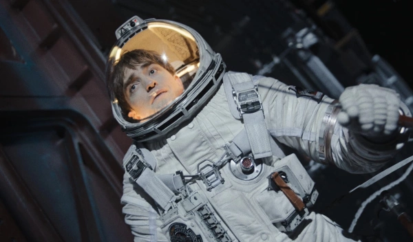
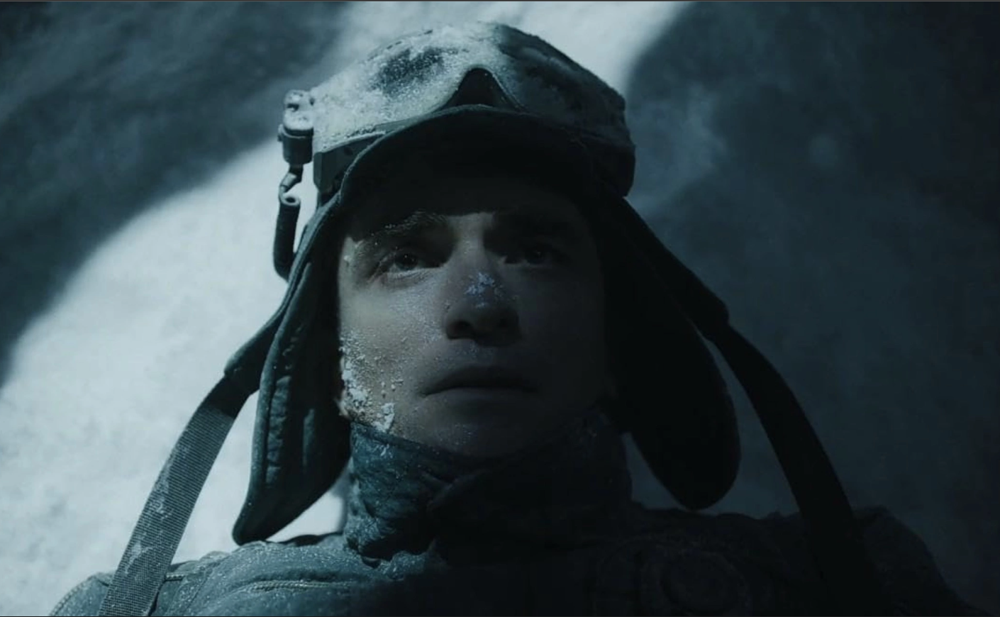
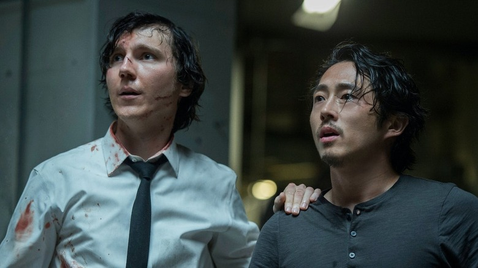
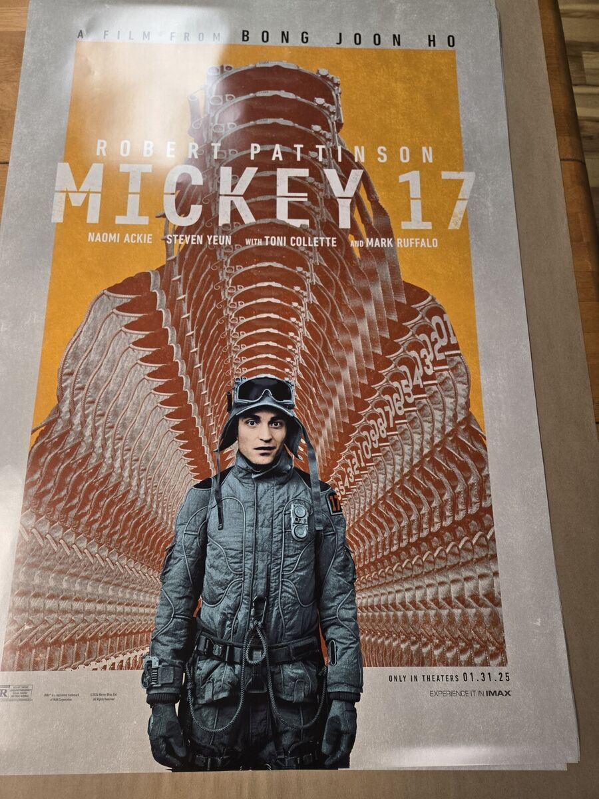

РБК Life
«Микки 17»: чем хороша сатира Пон Джун-хо с Робертом Паттинсоном.
На кинофестивале в Берлине состоялась долгожданная премьера фильма

Роберт Паттинсон в фильме «Микки 17»
Вне конкурса 75-го международного Берлинского кинофестиваля показали «Микки 17» Пон Джун-хо — третий англоязычный фильм корейца после «Сквозь снег» и «Окча». По мнению большинства критиков, лучший в его карьере. Несмотря на сложности во время постпродакшена, споры с продюсерами и очевидные монтажные сокращения, лента полностью готова к прокату, а производственные казусы сказались минимально. Кажется, Пон Джун-хо и сам хотел уменьшить хронометраж фильма, чтобы смотреть его было комфортно.
Какую историю на этот раз приготовил для нас именитый корейский автор, удостоенный «Оскара», рассказывает Ася Заболоцкая.
Микки Барнс — настоящий неудачник, который очень устал выполнять грязную работу. Он задолжал кучу денег «большим парням» и не нашел иного выхода, кроме как сбежать на другую планету. Микки не просто стал членом экипажа экспедиции на заснеженный Нильфхейм, где богатей Иероним Маршалл мечтает основать колонию, он добровольно стал «расходником». Такого сотрудника отправляют на смертельные, самые опасные миссии с риском для жизни, потому что после смерти его все равно клонируют, загрузив предварительно все знания и память предыдущего «расходника». Микки Барнс пережил уже 17 «воскрешений» и наконец начал задавать вечности вопросы о жизни и смерти.

Кадр из фильма «Микки 17»
«Микки 17» основан на фантастическом романе «Микки 7» Эдварда Эштона, который условно был вдохновлен сериалом «Звездный путь» и демонстрацией в нем телепортаций. Пон Джун-хо немного модифицировал сюжет романа, потому что постраничная экранизация растянулась бы на целый сериал, за который браться постановщик не имел большого желания. Хотя предпосылки к сериалу были, ведь тональность и ритм сюжета «Микки 17» так и требует продолжения. Фантастический мир приглашает исследовать множество социологических, политических и межличностных нюансов, так что хотелось бы картину длительностью больше 2 часов 19 минут. Увы, Пон Джун-хо старательно подрезал хронометраж.
Вопреки спекуляциям вокруг постпродакшена, у корейского режиссера никогда не было конфликта с продюсерами: последние пытались найти подходящее премьерное окно, а финальный монтаж не был камнем преткновения и оставался за главным постановщиком.
Пон Джун-хо поменял образ литературного Микки и окружающей его вселенной. Герой вместо учителя истории (ненужная профессия в мире Земли/Мидгарда, где в почете физики и инженеры) стал простым работягой, бесхребетным аутсайдером. Микки готов поглубже втянуть голову в плечи, почти исчезнув за воротником ветровки, лишь бы никто его не трогал. Такого рода люди — просто идеальные кандидаты в «расходники». Прежде чем вписаться в смертельную миссию, Микки даже не читает условия, и только когда дело сделано, понимает все ужасы, что ждут его на Нильфхейме.

Кадр из фильма «Микки 17»
Увечья и летальные исходы Микки до поры до времени показаны комедийно. Сотрудники миссии сперва отправляют его пионером в ледяную пустыню новой планеты на личном опыте проверить наличие смертельных вирусов, к которым потребуются вакцины. Подопытного кролика Микки все равно можно распечатать на 3D-принтере и продолжить исследования. Он все стерпит, не скажет «нет», не задаст лишних вопросов и будет продолжать проживать каждый день как последний. У него нет своей воли и чувства будущего — Микки, по сути, и на Земле был «расходником».
Несмотря на явно провальное отношение к жизни, на борту корабля у него заводится девушка Наша (Наоми Экки), волевая, боевая — полная ему противоположность, готовая защитить от любой беды. Она беспрекословно принимает клонов возлюбленного, так что тут Барнс просто счастливчик. Может, потому и не жалуется. И все же на 17-ю версию Микки настигает экзистенциальный кризис и выгорание. Лежа на дне какого-то провала в снегу в ожидании, когда его сожрут огромные слизни (коренные обитатели Нильфхейма), он понимает, что не готов умереть.

Кадр из фильма «Микки 17»
Как в «Паразитах», Пон Джун-хо опирается на тему социального неравенства. Руффало прекрасно изображает вспыльчивого жадного клоуна в галстуке, который бежит за утешением к своей жене Гвен (Тони Коллетт), чуть что пойдет не по плану. Она всегда успокоит его, всегда лишний раз потеребит его жирное эго. Оба, естественно, олицетворяют конкретное капиталистическое зло реального мира.

Кадр из фильма «Микки 17»
Как сатирик Пон Джун-хо отрывается на этой паре по полной программе, причем насмешки позволяет себе более острые, чем были в «Паразитах» и даже в «Сквозь снег». Нетрудно считать, намек на какую реальную медиафигуру сквозит в Иеронимусе Маршалле (все сторонники которого носят красные кепки), но за его присутствие стоит благодарить не режиссера, а скорее актера Руффало и его импровизацию.
Так что же Микки 17? Смерть так и не придет к нему там, в снегу. Вместо нее он получит Микки 18 в добровольно-принудительные партнеры. Дубликат не готов терпеть вторую роль и даже намеревается избавиться от предшественника, но конфликт быстро сходит на нет. Все-таки Микки 17 и Микки 18 — один и тот же Микки Барнс, не лучше и не хуже. Такое взаимное согласие оказывается самым прочным оружием в противостоянии капиталистической машине. В конце концов, подружившись с самим собой, можно хоть горы свернуть, хоть мохнатого слизня оседлать.

Кадр из фильма «Микки 17»
Полистать
- Россия достигла исторического минимума смертности за 10 лет
- Милли Бобби Браун жестко ответила СМИ, которые критиковали ее внешность
- Регистрация собак в Московской области и других регионах. Инструкция
- Алла Пугачева опубликовала новое фото с праздника весны
- Балерина проехала на шпагате на квадроциклах и поставила рекорд